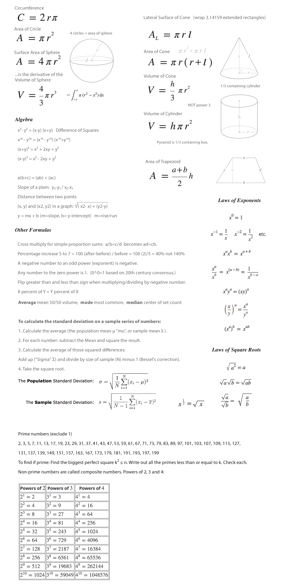
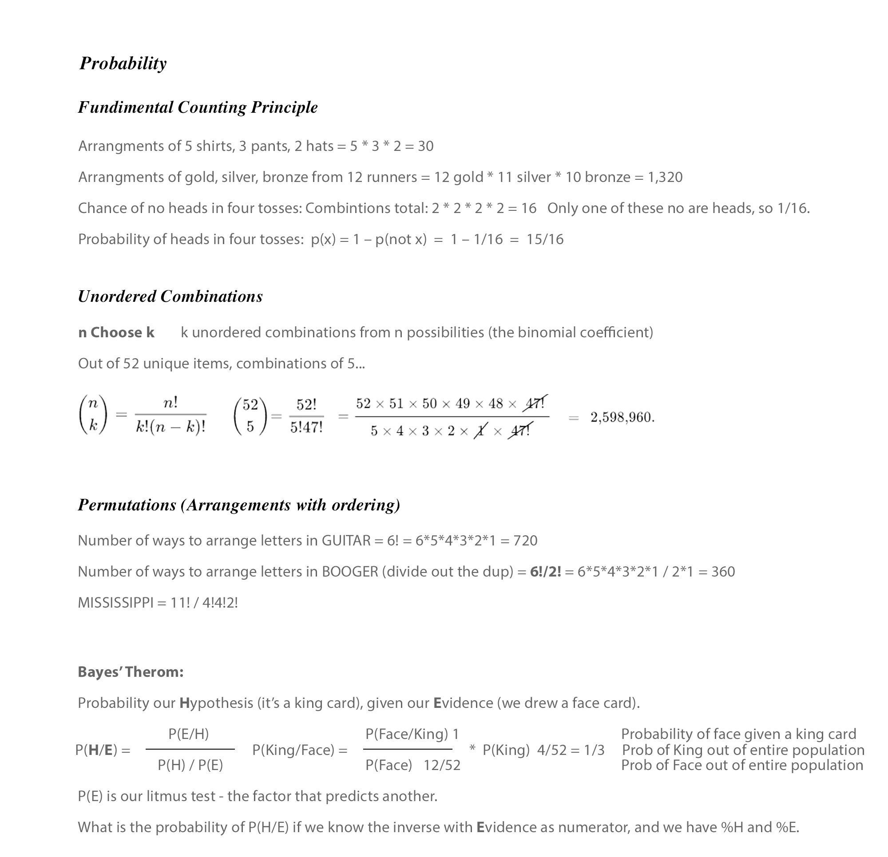
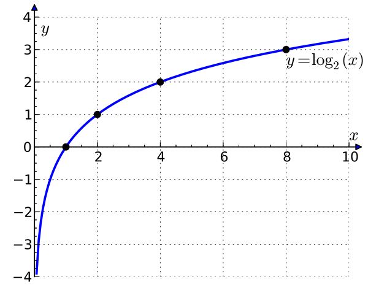

⇦ Math Guides
mode - The most repeating number. (Highest point on curve.) We can have more than one mode.median - 50% of the distribution lies on each side.
mean (average) - 50% of the volume under the curve lies on each side. skewed



Curve Matching
Regression Equations
MatLab vs ExcessD3 Curve Matching - includes PowerLaw curve
Distance = Rate * Time
Triangle Third Side Rule - Greater than difference, Less than sum.
Logarithm - The power to which a number must be raised in order to get some other number.



log2 8 = 3 because 23 = 8
log2 x = y because 2y = x
Log x base 2 equals y - because - base 2 to the y equals x
log 10010 = 2 because 102 = 100
Common Log
log 10 x = log x
log 10 x = log x
Natural Log
log e x = ln x
e = 2.71828
log e x = ln x
e = 2.71828
Exponent calculation always start with a 1,
which gets multipled (or divided) by the base number.
103 = 1 x 10 x 10 x 10 = 1,000
102 = 1 x 10 x 10 = 100
101 = 1 x 10 = 10
100 = 1
10-1 = 1 / 10 = .1
10-2 = 1 / (10 x 10) = .01
10-3 = 1 / (10x10x10) = .001
➤ Calculus - Summary on last page
➤ Matrix and Linear Algebra